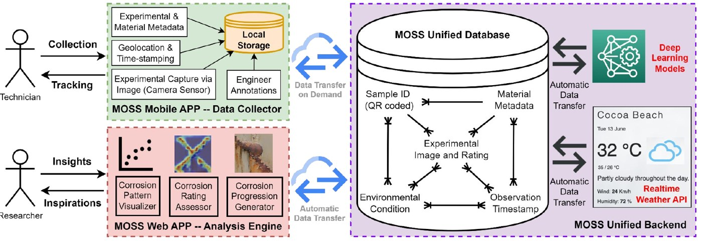
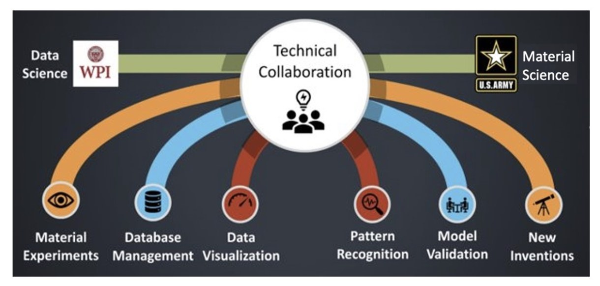

 Watch the demo video
Watch the demo videoField-deployed AI for military materials testing
Human signalTechnicians' field workflow and scientists' ASTM rating standard
I built MOSS, a web and iOS app that rates corrosion on metal test panels from photos. Scientists use it at the U.S. Army's Florida test site and at PPG.
I led and delivered partner-facing AI systems for PPG, U.S. Army DEVCOM ARL, and ASM International, coordinating 100+ engineers, scientists, and PMs to produce military performance standards, open data, and production-ready applications (arl.wpi.edu). One system is under commercialization.

Representative paperMOSS: AI Platform for Discovery of Corrosion-Resistant Materials CIKM 2023 · demo video